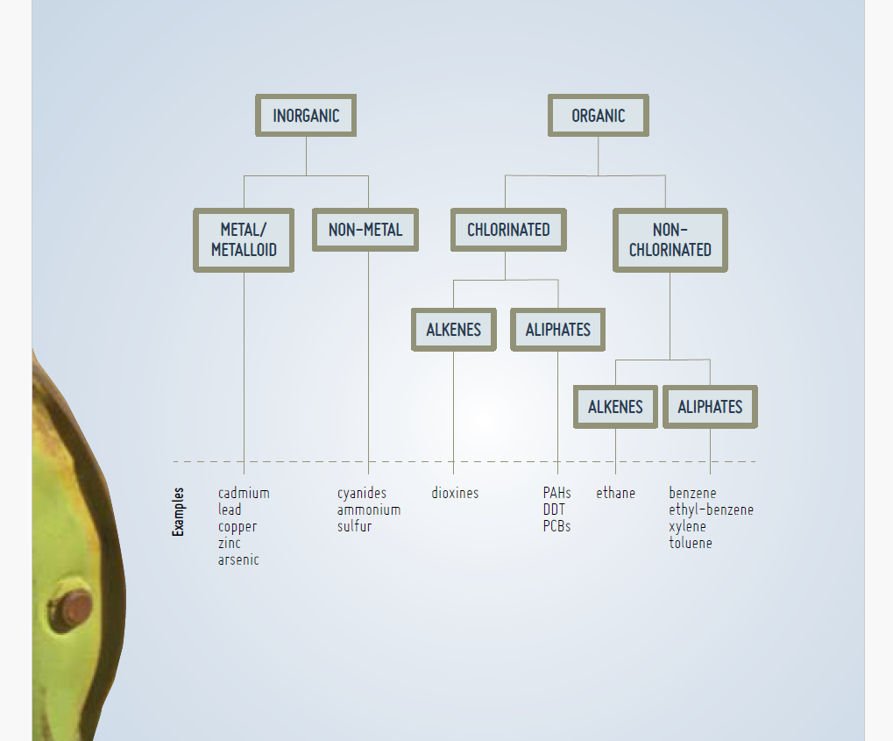
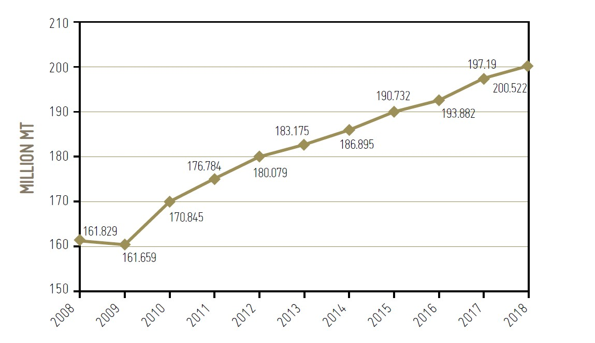
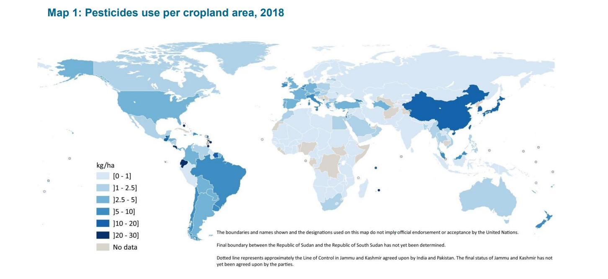
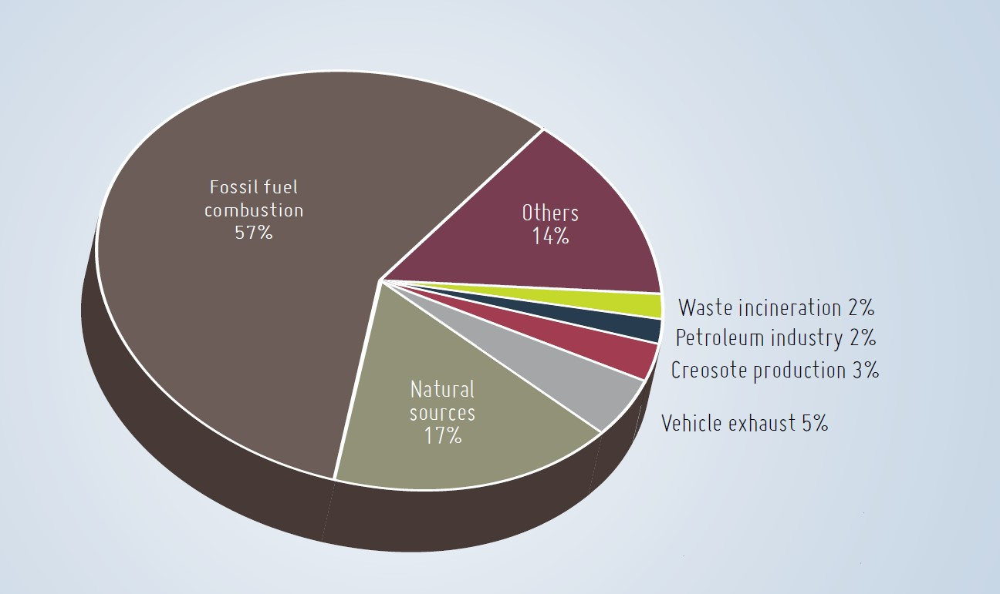
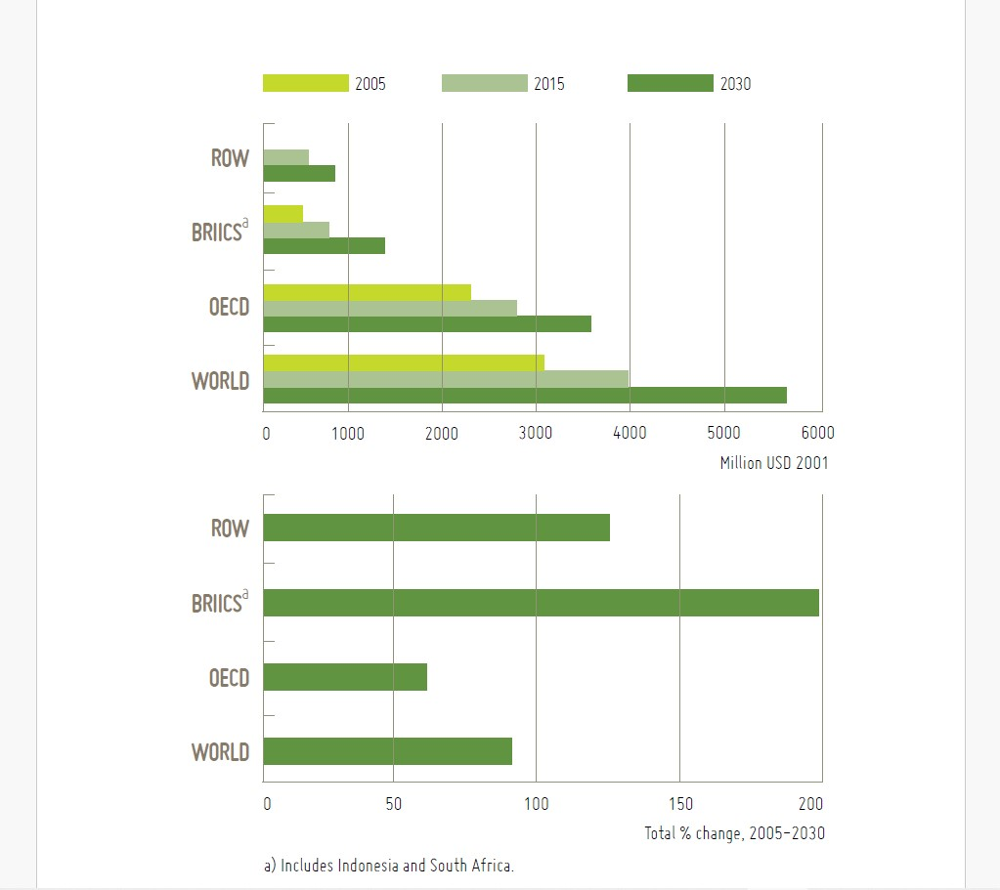

The release of pollutants to the environment, as has been mentioned, usually
originates from anthropogenic processes. Even if some elements and compounds
occur naturally in soils, human interventions are the main drivers of soil pollution.
The following sections discuss only a small subset of the most common pollutants
affecting agricultural areas, and the properties that make these compounds
pollutants. Pollutants have been divided by their chemical characteristics, but
some of the categories presented here overlap. Swartjes proposed a systematic
categorization of pollutants that may be useful in better understanding
them.

The term “heavy metals” refers to the group of metals and metalloids of relatively high atomic mass (>4.5 g/cm3) such as Pb, Cd, Cu, Hg, Sn, and Zn, that can cause toxicity problems. Other non-metals that are often considered together with heavy metals include As, antimony (Sb) and selenium (Se) (Kemp, 1998). These elements naturally occur at low concentrations in soils. Many of them are essential micronutrients for plants, animals and humans, but at high concentrations may cause phytotoxicity and harm human health because of their non‑biodegradable nature, which causes them to readily accumulate in tissues and living organisms. The main anthropogenic sources of heavy metals are industrial areas, mine tailings, disposal of high metal wastes, leaded gasoline and paints, application of fertilizers, animal manures, sewage sludge, pesticides, wastewater irrigation, coal combustion residues, spillage of petrochemicals, and atmospheric deposition from varied sources.Heavy metals are the most persistent and complex kind of pollutants to remediate in nature. They not only degrade the quality of the atmosphere, water bodies, and food crops, but also threaten the health and well‑being of animals and human beings. Metals accumulate in the tissues of living organisms because unlike most organic compounds they are not subject to metabolic breakdown. Among the heavy metals, Zn, Ni, Co, and Cu are relatively more toxic to plants, and As, Cd, Pb, Cr and Hg are relatively more toxic to higher animals.The most important elements to consider in terms of food‑chain contamination are As, Cd, Hg, Pb and Se (McLaughlin, Parker and Clarke, 1999). The main sources of As in soils are agrochemical compounds and mining and smelting activities, but they can also be introduced in manure originating from livestock feed with As‑rich additives. Some parent materials are rich in As and therefore their weathering can also be a source of As in high concentrations. Trace metals from inorganic (Cu‑based) and organic pesticides represent a major environmental and toxicological concern (Komárek et al., 2010). Cu is easily immobilized by soil organic matter (SOM) and Fe- and Mn‑(hydro)oxides, remaining at high concentrations on upper layers of soils. However, fungicide-derived Cu has been found in large amounts in the potentially available fraction of the soil.
Nitrogen (N) is an essential component of all living structures such as proteins, DNA, RNA, hormones, enzymes and vitamins. It occurs in both organic and inorganic forms, and in many different oxidation states. Its available forms differ depending on the specific organism. Unreactive forms such as gaseous nitrogen (N2) can be assimilated through microbial activity. Plants need more chemically available forms, such as ammonium (NH4 +) and nitrate (NO3 -), while animals require complex forms, such as amino acids and nucleic acids . Phosphorus (P) is one of the main macronutrients for all living organisms. It forms part of biological molecules, such as DNA and RNA, and it is used to transport cellular energy via adenosine triphosphate (ATP).In order to feed the increasing population and to supply the nutrient needs of the many deficient soils around the world, additions of N, P and potassium (K) through synthetic fertilizers were widely adopted through the twentieth century.Fertilizer demand has increased globally supported by global economic growth, leading to an excessive application of fertilizers following the idea “the more, the better.” According to FAO, fertilizer global consumption by 2018 is forecast to reach 200 million tonnes, with over 50 percent of global fertilizer consumption concentrated in China, the United States of America, and India . However, there is not a linear correlation between an increase in the amount of fertilizer applied to agricultural soils and an increase in crop production; on the contrary, increases may result in low nutrient use efficiency and in turn lower crop yields, and may cause acute environmental problems.  Nitrogen and phosphorus become pollutants when they are applied in excess to agricultural soils in the form of fertilizers, or in areas of intensive livestock production . These nutrients are able to leach into the groundwater or be transported to surface water bodies by runoff, causing eutrophication or leading to high nitrate concentrations and related environmental and human health problems. Many heavy metals have also been documented in phosphate and nitrate fertilizers including As, Cd, Cr, Hg, Pb, and Zn.While nutrients are essential to crop production, when they are applied in excess they can have negative effects on yields. Nitrogen increases chlorophyll production, and energy for flower growth and root elongation is redirected to foliage proliferation, causing disorders in plants and making them more vulnerable to pathogen attacks. It can also affect crop nutrient balance. Nitrogen pollution influences soil organic matter decomposition, as it affects microbial community composition and activities, as well as soil acidity and salinity.
Pesticides are applied to reduce crop losses due to insect pests, weeds and pathogens, and thus to guarantee global food supplies . Pesticides include but are not limited to insecticides, fungicides, herbicides, rodenticides, molluscicides, nematicides, and plant growth regulators.Without pesticide use, crop losses have been estimated to vary from 32 percent for cereals to 78 percent in fruit production. Pesticides are applied not only on agricultural lands; they also have a great importance on human health protection, for example for sanitary pest control of vector‑borne diseases. They are also used to keep infrastructures free of damaging insects and weeds, such as for preventing the attack of wood buildings by termites, or for keeping roadside and train tracks clean in order to help in avoiding accidents (Aktar, Sengupta and Chowdhury, 2009). Their use is not homogeneously distributed around the globe, mainly because of their cost and because pests vary by climatic and geographic region. According to FAOSTAT, FAO’s Corporate Database for Substantive Statistical Data , some low and middle income countries have increased their consumption of pesticides in the last decade. Bangladesh, for example, has increased the use of pesticides by four times, while Rwanda and Ethiopia have increased theirs by over six times. This amount goes up to ten times in the Sudan. Once again, the problem arises when a misuse of pesticides occurs: when they are applied in higher amounts than needed and using practices that contribute to their spreading into the environment, such as spraying with not suitable/not maintained/not calibrated application equipment or by planes into vast regions, affecting inhabitants and non-target organisms.  Pesticides can be either organic or inorganic synthetic molecules. They are classified on the basis of their chemical structures, their mode of action, their way of entry into the body, and their target organisms. Their toxicological effects on pests depend on their chemical composition, which in turn affects their interaction with soil components. According to their chemical structure, pesticides can be divided into twelve distinct groups, with the main pesticides in each group listed below:
• Organochlorine Compounds: DDT, Methoxychlor, Chlordane, Dicofol.
BHC/HCH, Aldrin, Endosulfan, Heptachlor, Methoxychlor, Chlordane,
Dicofol;
• Organophosphorus Compounds: Parathion, Malathion, Monocrotophos,
Chlorpyrifos, Quinalphos, Phorate, Diazinon, Fenitrothion,
Acephate, Dimethoate, Fenthion, Isofenfos, Phosphamidon, Temephos,
Triazophos;
• Carbamates: Aldicarb, Oxamyl, Carbaryl, Carbofuran, Carbosulfan,
Methomyl, Methiocarb, Propoxur, Pirimicarb;
• Pyrethroids: Allethrins, Deltametrin, Resmethrin, Cypermethrin,
Permethrin, Fenvalerate, Pyrethrum;
• Neonicotinoids: Acetamiprid, Imidacloprid, Nitenpyram, Thiamethoxam;
• Organotin Compounds: Triphenyltin acetate, Trivenyltin chloride,
Tricyclohexyltin hydroxide, Azocyclotin;
• Organomercurial Compounds: Ethyl mercuric chloride, Phenyl mercuric
bromide;
• Dithiocarbamate Fungicides: Zineb, Maneb, Mancozeb, Ziram;
• Benzimidizole Compounds: Benomyl, Carbendazim, Thiophanate
methyl;
• Chlorphenoxy Compounds: 2,4-D, TCDD, DCPA, 2,4,5-T, 2,4-DB, MCPA,
MCPP;
• Dipyridiliums: Paraquat, Diquat; and
• Miscellaneous: DNOC, Bromoxyl, Simazine, Triazamate.
Polycyclic aromatic hydrocarbons (PAHs) are a group of persistent, semi-volatile
organic pollutants.
Polycyclic aromatic hydrocarbons represent a broad group of physicochemically
different molecules made of two or more unsubstituted benzene rings fused together
when a pair of carbon atoms is shared between them. The most frequent PAHs are
anthracene, fluoranthene, naphthalene, pyrene, phenantrene and benzopyrene
. The very low water solubility of PAHs and the slow mass‑transfer rates
from solid phase may limit their availability to microorganisms, thus hindering
natural attenuation by microbial processes. Polycyclic aromatic hydrocarbons
accumulate in soils because of their persistence and hydrophobicity and tend to
be retained in the soil for long periods of time. For that reason, most PAHs are
components of POPs and are widespread in air, water, soils, and sediments .Low‑molecular‑weight PAHs, with two or three rings, are volatile and
occur mainly in the atmosphere, whereas those of medium and high molecular
weight are partitioned between the atmosphere and particles, depending on the
temperature .
Incomplete combustion of coal, gas, oil, and garbage; pyrolysis of organic materials
by industries, agriculture and traffic; diagenetic alteration processes of natural
organic matter (OM); long‑term wastewater irrigation; reused sewage sludge; and
fertilizer use in agricultural production all result in high concentrations of PAHs in
agricultural soils. For example, in western German forests,
brown coal strip-mining sites have been identified as the main sources of low
weight PAHs, while Khalili et al. identified two- and three‑ring
PAHs as major products originating from multiple emission sources, including
coke ovens, diesel and gasoline engines, and wood combustion. Traffic emissions and fossil fuel combustion are the main identified
sources of PAHs in urban areas.

Polycyclic aromatic hydrocarbons have attracted attention due to their high toxicity,
Polycyclic aromatic hydrocarbons have attracted attention due to their high toxicity,
mutagenicity, carcinogenicity, and widespread presence in the environment. Although there are many PAHs, scientists and regulators have focused on 16
compounds that have been identified as carcinogenic. Recently,
however, many different stakeholders support the implementation of broader
regulations that include not only other toxic PAHs but also heterocyclic aromatic
compounds and alkyl-derivatives. In a global analysis of
PAH distribution pattern in soils, Wilcke found that Germany and Czechia are
more contaminated with PAHs than all other parts of the world that have been
studied, such as China, the Russian Federation, Thailand, the United States of
America, Brazil and Ghana. In a more recent study, Loganathan and
Lam found higher concentrations of PAHs in soils in India compared to those in
Africa, the Islamic Republic of Iran, Brazil, the Russian Federation, Canada and
Australia. Thus, PAHs are ubiquitous contaminants in soils,
but their concentration varies depending on the distance from the pollutant source,
soil properties and climatic conditions.
Persistent organic pollutants (POPs) are chemical substances that persist in the environment, bioaccumulate through the food chain, and have adverse effects on human health and the environment . There are many thousands of POPs, and their origins are numerous, as they have been used in agriculture, disease control, manufacturing and many industrial processes. POPs include chlorinated and brominated aromatics, such as polychlorinated biphenyls (PCBs), which have been useful in a variety of industrial applications, for example in electrical transformers and large capacitors, as hydraulic and heat exchange fluids, and as additives to paints and lubricants; and organochlorine pesticides such as DDT and its metabolites, which are still used to control mosquitoes that carry malaria in some parts of the world. Other chemicals, unintentionally produced, such as dioxins (polychlorinated dibenzo-p-dioxins and –furans), which result from some industrial processes and from combustion (municipal and medical waste incineration and backyard burning of household waste) are also included in this category. Persistent organic pollutants are mainly hydrophobic and lipophilic compounds, and therefore present great affinity to organic matter and lipid membranes of cells and hence they can be stored in fatty tissue. The Stockholm Convention, a global treaty for protecting humans and the environment against POP contamination, has listed more than 20 POPs so far. Persistent organic pollutants enter the food chain by accumulating in the body fat of living organisms and becoming more concentrated as they move from one organism to the next in a process known as “biomagnification”. Persistent organic pollutants also have high mobility: they can easily penetrate water in its gaseous phase during warm weather and volatilize from soils into the atmosphere. This can then lead to their deposition many miles away from the release point as temperatures cool. Examples of POP contamination through mobility include the discovery of significant amounts of POPs in isolated regions in the Arctic. As a general rule, the more chlorinated the molecule, the less water soluble and volatile it is. Polychlorinated biphenyls are poorly taken up by plants but susceptible to bioaccumulation by animals, mainly in adipose tissue and breast milk. Since the publication of the book Silent Spring, a multitude of studies have focused on the effects of POPs on living organisms and the environment. Yet there is still a lack of information on the presence of POPs in soils in developing countries (Fiedler et al., 2013). Pollution by POPs could be expected to be significant in dumping sites of developing Asian countries, considering their poor management of municipal wastes and extensive use of such chemicals in the past .By the late 1970s most governments had banned PCB production, but an extensive environmental contamination still persists as a consequence of accidental spills and leaks due to improper transport, storage and disposal. Despite their use and production having significantly been reduced since the adoption of the Stockholm Convention, POPs persist in the environment, affecting food security, health and the environment for many more generations. Global agreement and increasing efforts and cooperation to remove POPs from soils is essential in preventing future pollution of crops and animals.
Radionuclides are present in the environment both as a naturally occurring substance and as one of anthropogenic origin. The emission of ionizing radiation during the decay of active atoms is the main contamination route of radionuclides, considering their long half-lives .The most common natural and anthropogenic radionuclides found in soils are 40K, 238U, 232Th, 90Sr and 137Cs. Anthropogenic sources of nuclear pollution include the global fallout from atmospheric nuclear weapons testing during the middle decades of the last century, operations of nuclear facilities and non‑nuclear industry (e.g. coal fire power plants, nuclear waste handling and disposal, and mining of radioactive ores , mineral fertilizers and nuclear accidents (Three Mile Island, the United States of America (1979); Chernobyl, Ukrainian SSR (1986); Goiânia, Brazil (1987); Tokaimura (1999) and Fukushima (2011), Japan).Radionuclides in the soil are taken up by plants, thereby becoming available for further redistribution within the food chain (Zhu and Shaw, 2000). For example, after the Fukushima accident, strict monitoring of agricultural products has been conducted to ensure food safety (Nihei, 2013). The monitoring demonstrated a fast decay in radionuclide content in vegetal products, but also discovered that radionuclides remained bioavailable in soils long after initial contamination . Although topsoil removal is highly recommended after a major radioactive accident, it may be not possible for large areas as it would generate a huge amount of radioactive waste. For that reason, agricultural areas are often abandoned for many years. Agricultural countermeasures must be applied to reduce the transfer of radionuclides in the food chain and to facilitate the return of potentially affected soils to their agricultural use. The transfer of radionuclides to animal‑derived food products has also been analyzed, but the mechanisms involved are not yet completely clear or well understood.
Emerging pollutants (EPs) refers to a large number of synthetic or naturally
occurring chemicals that have recently appeared in the environment and are
not commonly monitored. They have the potential to enter the
environment and to cause known or suspected adverse ecological and/or human
health effects. Emerging pollutants may well become pollutants of emerging
concern, as new facts or information have demonstrated that they are posing a risk
to the environment and human health. Emerging pollutants
encompass chemicals such as pharmaceuticals, endocrine disruptors, hormones
and toxins, among others, and biological pollutants, such as micropollutants in
soils, which include bacteria and viruses.
The anthropogenic production of chemicals has experienced a rapid growth
globally since the 1970s. In the European Union in 2016, the chemical industry
produced 319 million tonnes of hazardous and non‑hazardous chemicals. Of these,
117 million tonnes were deemed to be hazardous to the environment.
Global production is projected to increase annually by approximately 3.4 percent
until 2030, and non-OECD countries will be much greater contributors
to this production in the future. Production and use of hazardous
chemicals have been reduced over the last ten years; however, the uncertainties
that still remain and the lack of information from many developing countries make
it impossible to conclude that risks to the environment and human health have
been successfully reduced.

As an example, properties such as the adsorption behaviour of pharmaceuticals
can vary vastly in different soil types as their occurrence in both ionized and unionized
forms affects their interaction with different compounds in the soil . The abundance of a high
number of potentially toxic emerging pollutants
in the environment reinforces the need to better understand their occurrence, fate
and ecological impact.
Since the sources of EPs are varied and numerous, their nature, physical and
chemical properties are also diverse. These include volatility, polarity, adsorption
properties, persistence and their interaction with the environment. The main
groups of emerging organic pollutants affecting agricultural soils are described
below.Pharmaceutical and personal care products (PPCPs) are a class of emerging
chemical contaminants that have been used extensively for decades. There are
more than 4 000 pharmaceutical and chemical products, including pharmaceutical
drugs, diagnostic agents, cosmetics, fragrances, nutritional supplements and
additives used in many household cleaning items. Many PPCPs are biologically
active compounds, designed to interact with hormonal processes or
living tissues; for this reason it is important to know their fate, effects and potential
risks when they are released into the environment.
Since the late 1990s, detection of PPCPs in environmental matrices has been
increasingly reported worldwide. PPCPs enter urban wastewater streams but they are
not efficiently eliminated by conventional treatment technologies,
and end up accumulating in sludge. Municipal biosolids have been found to be a
sink for many PPCPs, and their land application as fertilizers may introduce these
compounds into the environment, causing harm to beneficial microorganisms and
affecting nutrient cycles. Limited information is available on the concentrations
of PPCPs in soils amended with biosolids, even though their persistence in soil is
significant. Another problem associated
with PPCPs is the presence of antimicrobial agents and their potential to promote
bacterial resistance in the environment.